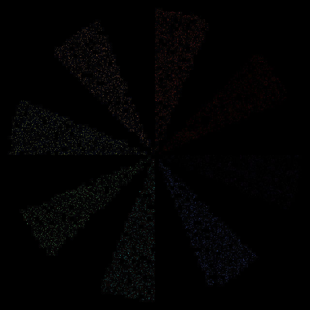
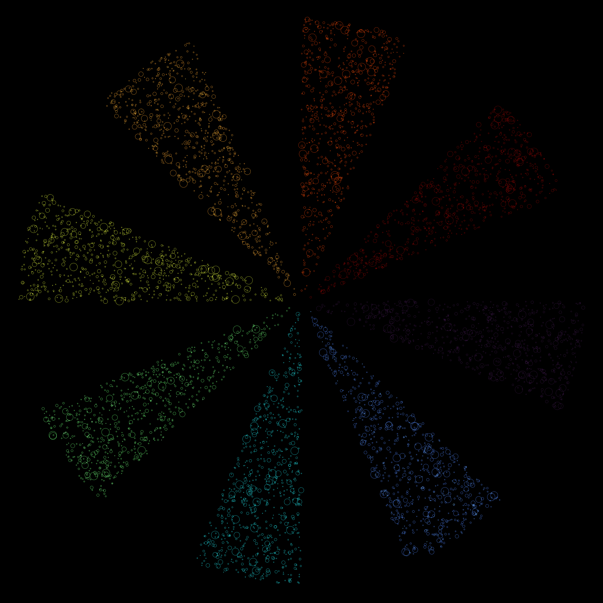
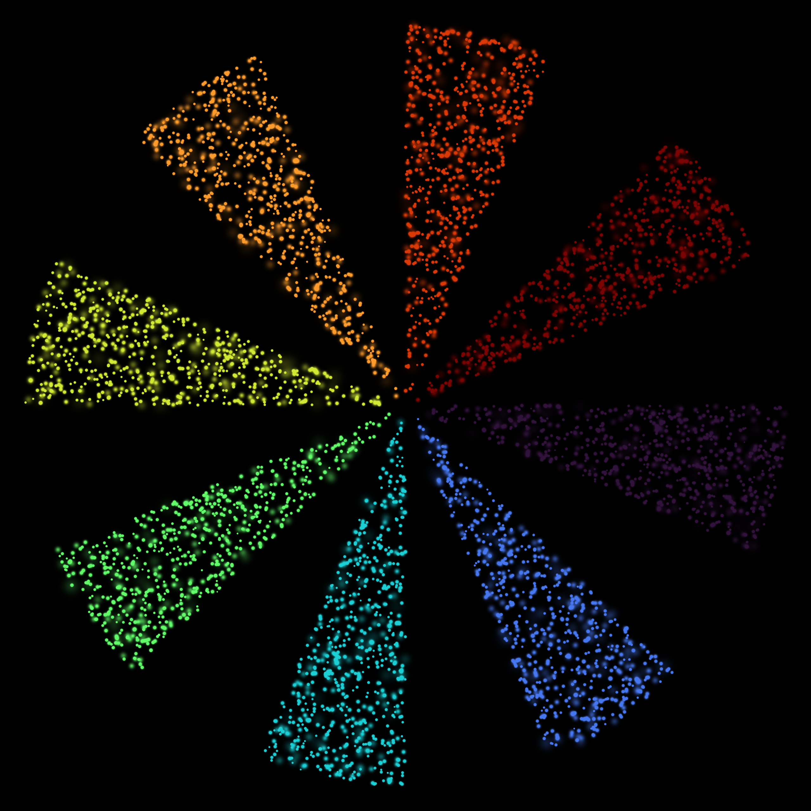
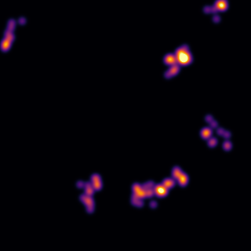
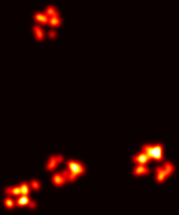
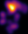
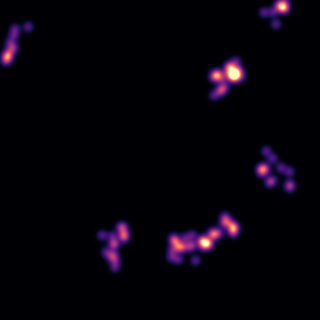
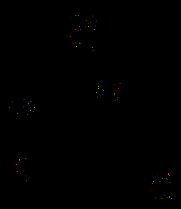
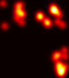
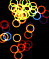

Examples
Examples for rendering modes in SMLMRender.jl.
Setup: Siemens Star Test Pattern
All examples below use a Siemens star pattern — 16 slices (8 filled, 8 empty) with z-depth increasing with angular position (0 to 2π maps to -1 to +1 μm):
n_pixels = length(camera.pixel_edges_x) - 1
pixel_size_um = camera.pixel_edges_x[2] - camera.pixel_edges_x[1]
fov_um = n_pixels * pixel_size_um
println("Dataset: $(length(smld.emitters)) localizations (Siemens star, 8 wedges)")
println("Field of view: $(round(fov_um, digits=2))μm × $(round(fov_um, digits=2))μm")Dataset: 5648 localizations (Siemens star, 8 wedges)
Field of view: 6.4μm × 6.4μmRendering Gallery
A side-by-side comparison of rendering strategies on the same simulated data:
# Histogram — z-depth, turbo (10x zoom)
config_hist = RenderConfig(strategy=HistogramRender(), color_by=:z, colormap=:turbo, zoom=10)
(img_gh, _) = render(smld, config_hist)
# Gaussian — intensity, inferno (40x zoom — need σ_pix > 2 for visible blobs)
config_gauss = RenderConfig(strategy=GaussianRender(use_localization_precision=true), colormap=:inferno, zoom=40)
(img_gg, _) = render(smld, config_gauss)
# Circle — z-depth, turbo (50x zoom)
config_circle = RenderConfig(strategy=CircleRender(use_localization_precision=true), color_by=:z, colormap=:turbo, zoom=50)
(img_gc, _) = render(smld, config_circle)
# Gaussian + Z-depth — turbo (40x zoom)
config_gz = RenderConfig(strategy=GaussianRender(use_localization_precision=true), color_by=:z, colormap=:turbo, zoom=40, clip_percentile=0.90)
(img_gz, _) = render(smld, config_gz)| Histogram (10x) | Gaussian (40x) | Circle (50x) | Gaussian + Z (40x) |
|---|---|---|---|
|  |  |  |  |
| Z-depth / turbo | Intensity / inferno | Z-depth / turbo | Z-depth / turbo |
Basic Usage
Simple Intensity Rendering
The simplest way to render SMLM data is with intensity-based colormapping:
# Render with default settings (GaussianRender, :inferno colormap)
(img, info) = render(smld, RenderConfig(zoom=20))
# Check rendering metadata
println("Rendered $(info.n_emitters_rendered) localizations")
println("Image size: $(size(img))")
println("Render time: $(round(info.elapsed_s * 1000, digits=1)) ms")
# Save and displayRendered 5648 localizations
Image size: (1280, 1280)
Render time: 35.1 ms
Custom Colormap
Choose from many available colormaps:
# Classic SMLM hot colormap (black → red → yellow → white)
(img_hot, _) = render(smld, RenderConfig(colormap=:hot, zoom=20))
# Inferno colormap (black → purple → orange → yellow)
(img_inferno, _) = render(smld, RenderConfig(colormap=:inferno, zoom=20))
# Magma colormap (black → purple → pink → yellow)
(img_magma, _) = render(smld, RenderConfig(colormap=:magma, zoom=20))
println("Rendered with 3 different colormaps")Rendered with 3 different colormaps| Hot | Inferno | Magma |
|---|---|---|
|  |  |  |
Pixel Size vs Zoom
Two modes for controlling output resolution:
zoom: Renders exact camera FOV with camera_pixels × zoom output
zoom=20with 64×64 camera → exactly 1280×1280 pixels- Output range = camera FOV (no cropping)
- Predictable, reproducible sizes
pixel_size: Uses data bounds with margin (variable size)
- Output crops to where localizations fell
- Size depends on data distribution
- Specify in nm
roi: Region of interest (zoom mode only)
- Render a subset of the camera FOV
- Specify camera pixel ranges:
roi=(x_range, y_range) - Use
:for full range on an axis
# zoom: Exact camera FOV (64×64 camera → 1280×1280 output)
(img_zoom, info_zoom) = render(smld, RenderConfig(zoom=20, colormap=:inferno))
println("Zoom (camera FOV): $(size(img_zoom))")
println(" Output: $(info_zoom.output_size), pixel_size=$(info_zoom.pixel_size_nm) nm")
# pixel_size: Data bounds + margin (variable size)
(img_px, info_px) = render(smld, RenderConfig(pixel_size=5.0, colormap=:inferno))
println("Pixel size (data bounds): $(size(img_px))")
println(" Output: $(info_px.output_size), pixel_size=$(info_px.pixel_size_nm) nm")
# roi: Subset of camera FOV
(img_roi, info_roi) = render(smld, RenderConfig(zoom=20, roi=(20:44, :), colormap=:inferno))
println("ROI (subset): $(size(img_roi))")
println(" Output: $(info_roi.output_size), pixel_size=$(info_roi.pixel_size_nm) nm")Zoom (camera FOV): (1280, 1280)
Output: (1280, 1280), pixel_size=5.0 nm
Pixel size (data bounds): (1317, 1318)
Output: (1317, 1318), pixel_size=5.0 nm
ROI (subset): (1280, 500)
Output: (1280, 500), pixel_size=5.0 nmRendering Strategies
Histogram Rendering
Fast binning-based rendering.
# Histogram with time coloring (color by frame number)
config = RenderConfig(
strategy = HistogramRender(),
color_by = :frame, # Temporal dynamics
colormap = :turbo, # High contrast for time
zoom = 20)
(img_hist, info_hist) = render(smld, config)
println("Histogram render: $(size(img_hist))")Histogram render: (1280, 1280)
Gaussian Rendering
Renders each localization as a smooth 2D Gaussian blob.
# Gaussian with localization precision (uses σ_x, σ_y from data)
config = RenderConfig(
strategy = GaussianRender(
n_sigmas = 3.0, # Render out to 3σ
use_localization_precision = true,
normalization = :integral # Gaussians sum to 1
),
colormap = :hot,
zoom = 20)
(img_gauss, info_gauss) = render(smld, config)
println("Gaussian render: $(size(img_gauss))")Gaussian render: (1280, 1280)
Circle Rendering
Renders each localization as a circle outline. Useful for visualizing uncertainty.
# 1σ circles with time coloring
config = RenderConfig(
strategy = CircleRender(
radius_factor = 1.0, # 1σ radius
line_width = 1.0,
use_localization_precision = true
),
color_by = :frame, # Temporal dynamics
colormap = :turbo, # High contrast rainbow
zoom = 20)
(img_circle, info_circle) = render(smld, config)
println("Circle render: $(size(img_circle))")Circle render: (1280, 1280)
Field-Based Coloring
Color each localization by a field value (z-depth, photons, frame, etc.).
Color by Z-Depth
# Color by z-depth (default turbo colormap)
(img_z, info_z) = render(smld, RenderConfig(color_by=:z, zoom=20))
println("Z-depth coloring: $(info_z.field_range)")Z-depth coloring: (-0.9375, 0.8125)Color by Photons
# Color by photon count
(img_photons, info_photons) = render(smld, RenderConfig(color_by=:photons, colormap=:viridis, zoom=20))
println("Photon range: $(info_photons.field_range)")Photon range: (10.0, 2307.530439307873)Color by Frame (Temporal Dynamics)
# Color by frame number (temporal information)
(img_frame, info_frame) = render(smld, RenderConfig(color_by=:frame, colormap=:twilight, zoom=20))
println("Frame range: $(info_frame.field_range)")Frame range: (1.0, 15.0)Color by Localization Precision
# Color by σ_x (localization precision)
config = RenderConfig(color_by=:σ_x, colormap=:plasma, zoom=20, filename="precision.png")
(img_prec, info_prec) = render(smld, config)Field Coloring Options
# Explicit field value range
(img, info) = render(smld,
color_by = :z,
colormap = :turbo,
field_range = (-500.0, 500.0), # Fixed range in nm
zoom = 20,
filename = "z_fixed_range.png")
# Custom percentile clipping
(img, info) = render(smld,
color_by = :photons,
colormap = :viridis,
field_clip_percentiles = (0.05, 0.95), # Clip outliers
zoom = 20,
filename = "photons_clipped.png")
# Auto range with clipping (default)
(img, info) = render(smld,
color_by = :z,
colormap = :plasma,
field_range = :auto, # Auto-detect range
field_clip_percentiles = (0.01, 0.99), # Default clipping
zoom = 20,
filename = "z_auto.png")Multi-Channel Rendering
Render multiple datasets with different colors and overlay them.
Two-Color Overlay
# Two-color overlay using dispatch (no Colors import needed!)
(img, info) = render([smld_protein1, smld_protein2],
colors = [:red, :green],
strategy = GaussianRender(),
zoom = 20,
filename = "two_color.png")
# Each channel is:
# 1. Rendered independently
# 2. Normalized to [0, 1]
# 3. Combined additively
# 4. Clipped to white where saturatedThree-Color Overlay
# Three-color overlay
(img, info) = render([smld1, smld2, smld3],
colors = [:red, :green, :blue],
strategy = GaussianRender(),
zoom = 20,
filename = "three_color.png")Custom Colors
using Colors
# Custom RGB colors
(img, info) = render([smld1, smld2],
colors = [RGB(1.0, 0.0, 0.0), RGB(0.0, 1.0, 1.0)], # Red and cyan
zoom = 20,
filename = "custom_colors.png")
# Named colors (no import needed!)
(img, info) = render([smld1, smld2],
colors = [:magenta, :yellow],
zoom = 20,
filename = "magenta_yellow.png")Multi-Channel with Different Strategies
# Note: Currently all channels use same strategy
# For different strategies per channel, render separately and combine manually
# Render each channel
(img1, _) = render(smld1, color=:red, strategy=GaussianRender(), zoom=20)
(img2, _) = render(smld2, color=:green, strategy=CircleRender(), zoom=20)
# Manual combination
img_combined = img1 .+ img2
save_image("mixed_strategies.png", img_combined)Output and Export
Direct File Save
# Save directly during rendering
(img, info) = render(smld,
colormap = :inferno,
zoom = 20,
filename = "output.png")
# Or save later
(img, info) = render(smld, colormap=:inferno, zoom=20)
save_image("output.png", img)Export Colorbar
# Manual way with custom parameters
export_colorbar(:turbo, # Colormap
(-500.0, 500.0), # Value range
"Z-depth (nm)", # Label
"colorbar.png", # Filename
orientation = :vertical, # :vertical or :horizontal
size = (80, 400), # (width, height) in pixels
fontsize = 14, # Label font size
tickfontsize = 12) # Tick font sizeAccess Result Metadata
(img, info) = render(smld, color_by=:z, colormap=:turbo, zoom=20)
# Access RenderInfo fields
println("Image size: ", size(img))
println("Emitters rendered: ", info.n_emitters_rendered)
println("Render time: ", info.elapsed_s, " seconds")
println("Pixel size: ", info.pixel_size_nm, " nm")
println("Strategy: ", info.strategy)
println("Color mode: ", info.color_mode)
println("Field range: ", info.field_range)Custom Targets
Explicit Pixel Edges
# Define custom pixel edges
x_edges = range(0.0, 10.0, length=201) # 200 pixels, 0-10 μm
y_edges = range(0.0, 10.0, length=201)
(img, info) = render(smld, x_edges, y_edges,
strategy = GaussianRender(),
colormap = :inferno,
filename = "custom_edges.png")Manual Target Creation
# Create target manually
target = Image2DTarget(
512, # width in pixels
512, # height in pixels
10.0, # pixel size in nm
(0.0, 5.12), # x range in μm
(0.0, 5.12) # y range in μm
)
(img, info) = render(smld,
target = target,
strategy = GaussianRender(),
colormap = :hot,
filename = "manual_target.png")Performance Tips
Memory Estimation
using SMLMRender
# Estimate memory usage for rendering
n_locs = length(smld.emitters)
width = 512
height = 512
strategy = GaussianRender()
mem_bytes = estimate_memory_usage(n_locs, width, height, strategy)
mem_gb = mem_bytes / 1024^3
println("Estimated memory: ", mem_gb, " GB")Backend Selection
# CPU backend (default)
(img, info) = render(smld, backend=:cpu, zoom=20)
# Auto backend selection (future: may select GPU if available)
(img, info) = render(smld, backend=:auto, zoom=20)
# Note: CUDA and Metal backends planned for future releasesLarge Dataset Rendering
# For very large datasets, use HistogramRender for speed
(img, info) = render(smld,
strategy = HistogramRender(),
colormap = :hot,
zoom = 10,
filename = "large_dataset.png")
# Or reduce zoom factor to reduce output size
(img, info) = render(smld,
strategy = GaussianRender(),
colormap = :inferno,
zoom = 5, # Lower zoom = smaller output
filename = "large_lowzoom.png")Available Colormaps
Get a list of recommended colormaps:
colormaps = list_recommended_colormaps()
# View by category
println("Sequential: ", colormaps[:sequential])
println("Diverging: ", colormaps[:diverging])
println("Cyclic: ", colormaps[:cyclic])
println("Perceptual: ", colormaps[:perceptual])Output:
Sequential: [:viridis, :cividis, :inferno, :magma, :plasma, :turbo, :hot]
Diverging: [:RdBu, :seismic, :coolwarm]
Cyclic: [:twilight, :phase]
Perceptual: [:viridis, :cividis, :inferno, :magma, :plasma]Common Workflows
Quick Data Check
# Quick low-resolution preview
(img, info) = render(smld, zoom=5, colormap=:hot, filename="preview.png")Publication Figure
# High-quality Gaussian rendering for publication
(img, info) = render(smld,
strategy = GaussianRender(
n_sigmas = 3.0,
use_localization_precision = true,
normalization = :integral
),
colormap = :inferno,
zoom = 30, # High zoom for detail
filename = "publication.png")Uncertainty Visualization
# Show localization precision with circles
(img, info) = render(smld,
strategy = CircleRender(
radius_factor = 1.0, # 1σ circles
line_width = 1.0,
use_localization_precision = true
),
color_by = :σ_x, # Color by precision
colormap = :plasma,
zoom = 50,
filename = "uncertainty.png")3D Depth Encoding
# Encode z-depth in color
(img, info) = render(smld,
strategy = GaussianRender(),
color_by = :z,
colormap = :turbo,
zoom = 20,
filename = "3d_depth.png")
# Export colorbar showing depth scale
export_colorbar(:turbo, info.field_range, "Z-depth (μm)", "depth_scale.png")Temporal Dynamics
# Show acquisition time via frame coloring
(img, info) = render(smld,
strategy = GaussianRender(),
color_by = :frame,
colormap = :twilight, # Cyclic for temporal
zoom = 20,
filename = "temporal.png")